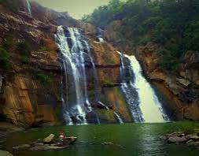

Major Cities and Urban Centers
Ranchi
- Hirni Falls: A stunning waterfall located in a picturesque setting, ideal for nature lovers.
- Rock Garden: A beautifully landscaped garden with rock formations and artificial waterfalls.
- Tagore Hill: A scenic hill offering panoramic views of Ranchi, named after the famous poet Rabindranath Tagore.
- Ranchi Lake: A serene lake perfect for boating and relaxation, surrounded by lush greenery.
- Jaipal Singh Stadium: A major sports stadium hosting various events and matches.
- State Museum: A museum showcasing the rich culture and history of Jharkhand.
Jamshedpur
- Jubilee Park: A sprawling park with beautiful gardens, fountains, and a zoo, perfect for family outings.
- Dalma Wildlife Sanctuary: A natural habitat for elephants and other wildlife, offering trekking and nature trails.
- Tata Steel Zoological Park: A well-maintained zoo featuring a variety of animals, ideal for a day trip.
- Sir Dorabji Tata Park: A beautiful park featuring lush greenery, walking paths, and a serene lake.
- Bhatia Park: A well-known park ideal for jogging, picnics, and relaxation.
- Gopal Maidan: A large open space that hosts various cultural events and exhibitions throughout the year.
Dhanbad
- Bihar Mines: An open coal mine site showcasing the region's rich mining heritage and operations.
- Topchanchi Lake: A scenic lake surrounded by lush greenery, ideal for picnics and boating activities.
- Shakti Mandir: A popular temple dedicated to Goddess Durga, attracting many visitors, especially during festivals.
- Jawahar Park: A large park featuring beautiful gardens and recreational facilities, perfect for families.
- Maithon Dam: A significant dam on the Barakar River, known for its stunning views and picnic spots.
- Indian School of Mines (ISM): An esteemed institution offering insights into mining and engineering, often open for campus visits.
Bokaro
- Bokaro Steel Plant: One of the largest steel plants in India, showcasing industrial architecture and operations.
- City Park: A beautiful park featuring lush greenery, walking paths, and a lake, ideal for family outings.
- Tenughat Dam: A scenic dam and reservoir, perfect for picnics and enjoying nature.

- Jawahar Nehru Biological Park: A zoo and botanical garden, home to a variety of flora and fauna.
- Garga Dam: Another beautiful dam in the area, ideal for water activities and nature appreciation.
- Shiv Mandir: A revered temple dedicated to Lord Shiva, frequented by locals and tourists alike.
Waterfalls and Natural Attractions
Dassam Falls
- Location: Dassam Falls is located near Taimara, about 40 km from Ranchi, the capital city of Jharkhand.
- Height: The waterfall cascades from a height of approximately 144 feet, creating a spectacular view.
- Activities: Visitors can enjoy picnicking, trekking, and taking photos of the beautiful scenery.
- Scenic Beauty: The falls are surrounded by lush greenery, making it a perfect spot for nature lovers.
- Best Time to Visit: The best time to visit is during the monsoon season (July to September) when the falls are in full flow.
- Nearby Attractions: Other nearby attractions include Jonha Falls and Hundru Falls, which are also popular among tourists.
Hundru Falls
- Location: Situated in the Ranchi district of Jharkhand, Hundru Falls is one of the largest waterfalls in the region.
- Height: The falls cascade from a height of approximately 98 meters, creating a stunning view.
- Natural Beauty: Surrounded by lush greenery and rocky terrain, it's a perfect spot for nature lovers and photographers.
- Activities: Visitors can enjoy trekking, picnicking, and exploring the surrounding landscapes.
- Best Time to Visit: The ideal time to visit is during the monsoon season when the waterfall is in full flow.
- Nearby Attractions: Other attractions include Jonha Falls and Dassam Falls, which are also worth exploring.
Jonha Falls
- Location: Situated near the town of Ranchi in Jharkhand, Jonha Falls is a beautiful waterfall surrounded by lush greenery.
- Height: The falls cascade from a height of about 43 meters, creating a stunning view and a serene environment.
- Accessibility: The site is easily accessible, with a short trek leading down to the base of the falls.

- Activities: Visitors can enjoy photography, picnics, and exploring nearby nature trails.
- Best Time to Visit: The ideal time to visit is during the monsoon season (June to September) when the falls are at their most magnificent.
- Nearby Attractions: Other attractions nearby include the Hundru Falls and the scenic views of Ranchi.
Lodh Falls
- Location: Situated near the village of Lodh in the Latehar district, Lodh Falls is a stunning waterfall that cascades down rocky cliffs.
- Height: Approximately 60 meters, making it one of the tallest waterfalls in Jharkhand.
- Natural Beauty: Surrounded by lush greenery, the falls are an ideal spot for nature lovers and photographers.
- Best Time to Visit: The ideal time to visit is during the monsoon season (July to September) when the falls are in full flow.
- Activities: Visitors can enjoy trekking, photography, and picnics near the falls.
- Nearby Attractions: Close to other natural attractions like the Netarhat Hills and various wildlife sanctuaries.
Wildlife Sanctuaries and National Parks
Betla National Park
- Wildlife Diversity: Home to a variety of wildlife, including tigers, leopards, elephants, and several species of deer.
- Flora: Rich in biodiversity, the park features lush forests of sal, bamboo, and teak trees.
- Betla Fort: A historical fort located within the park, offering a glimpse into the region's history.
- Safari Tours: Offers thrilling jeep and elephant safaris to explore the park's rich wildlife.
- Bird Watching: A paradise for bird enthusiasts with numerous species, including migratory birds.
- Trekking: The park provides various trekking trails for adventure lovers to explore its natural beauty.
Dalma Wildlife Sanctuary
- Introduction: Dalma Wildlife Sanctuary is located near Jamshedpur and is known for its diverse flora and fauna.
- Wildlife: Home to elephants, deer, leopards, and a variety of birds, making it a popular destination for wildlife enthusiasts.
- Trekking: The sanctuary offers several trekking trails that provide breathtaking views of the surrounding landscapes.
- Flora: The sanctuary is rich in vegetation, including sal and bamboo forests, which provide habitat for many species.
- Best Time to Visit: The ideal time to visit is from November to March when the weather is pleasant.
- Visitor Facilities: The sanctuary offers guided tours, eco-friendly accommodations, and educational programs for visitors.
Hazaribagh Wildlife Sanctuary
- Wildlife Diversity: The sanctuary is home to various species of animals including deer, leopards, and numerous bird species.
- Natural Beauty: Known for its picturesque landscapes, lush greenery, and rolling hills.
- Eco-Tourism: Offers opportunities for trekking, bird watching, and exploring the rich flora and fauna.
- Best Time to Visit: The sanctuary is best visited during the winter months, from October to March, when the weather is pleasant.
- Activities: Visitors can enjoy safari rides, guided tours, and camping experiences within the sanctuary.
- Conservation Efforts: The sanctuary plays a vital role in conserving endangered species and promoting biodiversity.
Pilgrimage and Religious Sites
Deoghar
- Baba Baidyanath Temple: One of the twelve Jyotirlingas, this temple is dedicated to Lord Shiva and is a major pilgrimage site.
- Tapovan: A sacred hilltop area featuring temples and meditation spots, known for its serene environment.
- Naulakha Mandir: A beautiful temple known for its stunning architecture, dedicated to Radha-Krishna.
- Paranand Kunj: A spiritual retreat offering peaceful surroundings and meditation spaces.
- Shivganga: A sacred pond located near Baba Baidyanath Temple, believed to have healing properties.
- Basukinath Temple: Another significant temple dedicated to Lord Shiva, located close to Deoghar.
Parasnath Hill
- Overview: Parasnath Hill is the highest peak in Jharkhand and a significant pilgrimage site for Jains, dedicated to Lord Parshvanath, the 23rd Tirthankara.
- Accessibility: The hill is accessible via a well-marked trekking path and offers breathtaking views of the surrounding landscape.
- Temples: The hill hosts several ancient Jain temples, featuring intricate carvings and architecture that attract both devotees and tourists.
- Significance: The hill is considered sacred, with many pilgrims undertaking the trek to seek blessings and engage in spiritual practices.
- Best Time to Visit: The ideal time to visit is during the winter months, from October to March, when the weather is pleasant for trekking.
- Cultural Importance: Parasnath Hill is not only a religious site but also a cultural hub, hosting various festivals and events throughout the year.
Ranchi
- Jagannath Temple: A prominent temple dedicated to Lord Jagannath, famous for its annual Rath Yatra.
- Hindu Dham: A significant pilgrimage site featuring various temples and cultural activities.
- Jonha Falls: While primarily a natural site, it's also revered for the nearby Maa Joni Devi Temple.
- Birsa Mandir: A famous temple dedicated to Lord Birsa Munda, a revered tribal leader and freedom fighter.
- Swarnarekha River: Considered sacred, it’s often visited for rituals and offerings.
- Patratu Valley: Known for its scenic beauty and a temple dedicated to Lord Shiva, popular among devotees.
Historical and Archaeological Sites
Itkhori
- Itkhori Temple: An ancient temple dedicated to Lord Shiva, known for its beautiful architecture and spiritual significance.
- Archaeological Sites: Various remnants from the Mauryan and Gupta periods, including ancient sculptures and inscriptions.
- Itkhori Hill: A scenic hill offering panoramic views and historical significance, ideal for trekking and exploration.
- Itkhori Archaeological Museum: A museum showcasing artifacts and sculptures from the region’s rich history.
- Local Markets: Vibrant markets near Itkhori offering local crafts and traditional items.
- Historical Monuments: Various structures and remnants reflecting the region’s historical legacy.
Maluti Temples
- Overview: The Maluti Temples, located in the Maluti village of Jharkhand, are a group of 70 ancient temples dedicated to various Hindu deities.
- Architecture: These temples showcase intricate terracotta sculptures and are known for their unique architectural style influenced by the Bengal school of architecture.
- Historical Significance: Dating back to the 17th century, the temples are a testament to the region's rich cultural and religious heritage.
- Festivals: The temples are significant during various Hindu festivals, attracting devotees and tourists alike.
- Preservation Efforts: Ongoing efforts are being made to preserve the temples due to their historical and cultural importance.
- Visiting Tips: Best visited during the cooler months, and local guides can enhance the experience by sharing the history and significance of the temples.
Navratangarh
- Navratangarh Fort: A historic fort built during the 17th century, known for its architectural beauty and panoramic views of the surrounding landscape.
- Archaeological Remains: Various ruins and artifacts that provide insight into the region's ancient history and culture.
- Local Temples: Several ancient temples in the area, showcasing intricate carvings and historical significance.
- Heritage Walks: Guided tours that explore the history and architecture of Navratangarh, ideal for history enthusiasts.
- Local Handicrafts: The area is known for traditional crafts, which reflect the rich cultural heritage of Jharkhand.
- Scenic Views: The fort offers stunning views of the surrounding hills and valleys, perfect for photography and relaxation.
Other Notable Attractions
Betla
- Betla National Park: A stunning wildlife sanctuary home to elephants, tigers, and various species of birds.
- Lord Vishnu Temple: A revered temple located within the park, attracting pilgrims and nature lovers alike.
- Palamau Fort: A historic fort with beautiful architecture and panoramic views of the surrounding landscape.
.jpg)
- Koel River: A serene river ideal for boating and enjoying the scenic beauty of the region.
- Chhatarpur Temple: A historic temple known for its architecture and peaceful ambiance.
- Betla Jungle Safari: An exciting opportunity to explore the diverse flora and fauna of Betla National Park.
Ghatshila
- Dharagiri Falls: A stunning waterfall surrounded by lush greenery, perfect for nature lovers and photography.
- Burudi Lake: A serene lake ideal for boating and relaxing amidst nature's beauty.
- Galudih Dam: A popular picnic spot offering scenic views and opportunities for water sports.
- Jadugora: Known for its uranium mines, this area has stunning landscapes and is close to Ghatshila.
- Ghatshila Temple: A revered temple with beautiful architecture and a tranquil ambiance.
- Subarnarekha River: A picturesque river that offers opportunities for fishing and riverside picnics.
Canary Hill
- Canary Hill: A scenic hill station near the city of Hazaribagh, known for its lush greenery and panoramic views.
- Hazaribagh Wildlife Sanctuary: A wildlife reserve that offers opportunities for trekking and spotting various species of flora and fauna.
- Tagore Hill: A beautiful spot with a rich historical background, associated with the famous poet Rabindranath Tagore.
- Sun Temple: A stunning temple dedicated to the Sun God, featuring impressive architecture and serene surroundings.
- Hazaribagh Lake: A beautiful spot for picnics and leisure activities, surrounded by natural beauty.
- Bhadrakali Temple: A famous temple located in a serene setting, known for its spiritual significance.
Sanskritik Vihar
- Sanskritik Vihar: A cultural complex located in the heart of Ranchi, showcasing the rich cultural heritage of Jharkhand through various art forms, exhibitions, and performances.
- Natural Beauty: Surrounded by lush greenery and serene landscapes, providing a peaceful environment for visitors.
- Art and Craft Exhibitions: Regular exhibitions of local art and crafts, promoting the talents of local artisans.
- Cultural Programs: Hosts various cultural events and festivals that celebrate the traditions and customs of Jharkhand.
- Visitor Amenities: Facilities for visitors, including seating areas, food stalls, and information centers.
- Photography Opportunities: A beautiful setting for photography enthusiasts to capture the essence of Jharkhand's culture.